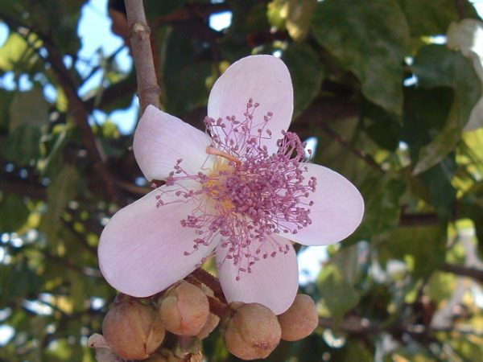

अनाट्टोAnnatto
Bixa orellana · Bixaceae · FLR-0321

- Scientific name वैज्ञानिक नाम
- Bixa orellana L.
- Family कुल
- Bixaceae
- Hindi हिंदी
- अनाट्टो
- Local names स्थानीय नाम
- annatto, sinduri, lipstick tree, latkan, bija
- Status here यहाँ की स्थिति
- naturalized
- Movement आवागमन
- Resident, here all year
- Known from कहाँ दर्ज
- Others have published records from the wider Awadh–Purvanchal plain, none yet from Basti–Ayodhya अवध–पूर्वांचल से दूसरों के प्रकाशित अभिलेख, बस्ती–अयोध्या से अभी नहीं
- IUCN IUCN
- not evaluated
- Review समीक्षा
- not yet reviewed
When to look कब देखें
Present all year. साल भर मौजूद।
Uses and possibilities उपयोग और संभावनाएँ
“Traditional medicine” means a documented traditional use, not a claim that it works. Nothing on this page is medical advice.
Drawn from the documented uses in the profile below, where each is labelled traditional, current or a research lead. All uses →
Tell it apart from इनसे अलग पहचानें
अनाट्टो / Annatto
Bixa orellana L. — Bixaceae
अनाट्टो — उष्णकटिबंधीय अमेरिका का एक छोटा सुंदर सदाबहार वृक्ष, जिसे भारत में 'सिंदूरी' या 'लिपस्टिक ट्री' के नाम से जाना जाता है। बरसात के बाद इसकी शाखाओं पर हल्के गुलाबी-सफ़ेद आकर्षक फूल खिलते हैं। सर्दियों में इस पर दिल के आकार के गहरे लाल काँटेदार फल लगते हैं, जिनके अंदर बंद बीजों से लाल-नारंगी प्राकृतिक रंग निकलता है जिसका उपयोग मक्खन, पनीर और पारंपरिक सिंदूर में होता है।
Quick Identification त्वरित पहचान
| Feature | Description |
|---|---|
| Habit | Large evergreen shrub or bushy small tree 3–8 m tall (Duthie 1903) |
| Bark | Smooth, greyish-brown to pinkish, dotted with small pale lenticels |
| Leaves | Cordate-ovate, 10–20 cm long, long-petioled, glabrous, shining green (Duthie 1903) |
| Flowers | Showy, 4–6 cm across, pale pink or white, borne in terminal corymbose panicles (Duthie 1903) |
| Capsule | Ovoid or heart-shaped, 3–4 cm long, densely covered with soft flexible bristles, reddish-brown (Duthie 1903) |
| Seeds | Numerous, angular, embedded in bright orange-red pulpy bixin pigment |
Field tip: Look in homestead herb gardens and agroforestry plots for heart-shaped glossy leaves, pinkish terminal flower clusters, and clusters of bristly red pods that stain the fingers bright orange when cracked open.
हिंदी — कैसे पहचानें: दिल के आकार की लंबी डंठल वाली पत्तियाँ, गुलाबी-सफेद सुंदर फूल, और कांटेदार लाल फल जिन्हें दबाने पर उँगलियों पर सिंदूरी नारंगी रंग लग जाता है।
Morphology शारीरिक संरचना
Biometrics (Duthie 1903; Brandis 1906):
| Measurement | Range |
|---|---|
| Plant height | 3–8 m (Duthie 1903) |
| Stem diameter | 10–25 cm (Brandis 1906) |
| Leaf blade length | 10–20 cm (Duthie 1903) |
| Leaf blade width | 6–12 cm (Duthie 1903) |
| Petiole length | 4–9 cm (Duthie 1903) |
| Capsule length | 3–4 cm (Duthie 1903) |
Trunk and branches: Bole short, branching low to produce a dense, rounded bushy head. Bark smooth, dark brownish-grey, peeling in small scales on older trunks.
Leaves: Alternate, simple, ovate-cordate, acuminate, entire, glabrous above, paler with minute reddish glands beneath. Secondary nerves 4–5 pairs, curving upward towards the leaf apex.
Flowers and fruit: Flowers bisexual, showy, fragrant, borne in terminal branched panicles. Sepals five, deciduous; petals five, obovate, pinkish or white. Stamens numerous, filaments yellow, anthers purple. The fruit is a 2-valved, compressed, ovoid-globose capsule covered in soft flexible spines, opening along two sutures to expose seeds coated in bixin.
हिंदी: पौधा झाड़ीदार और घना होता है। पत्तियाँ चौड़ी और चिकनी होती हैं। फल दो हिस्सों में खुलने वाला चपटा सम्पुट होता है, जिस पर मुलायम कांटे उगे रहते हैं।
Behaviour & Ecology व्यवहार एवं पारिस्थितिकी
Bixa orellana is a fast-growing, frost-sensitive tropical tree naturalised across frost-free tracts of northern and peninsular India. It thrives in humid, well-drained alluvial loams with full sun exposure, requiring shelter from dry desiccating summer winds.
The mass blooming in August and September offers an abundant source of nectar and pollen during the post-monsoon lull in agricultural crop flowering. Flowers exhibit poricidal anther dehiscence, encouraging buzz pollination by bumblebees and carpenter bees. The bright crimson pods remain on branches for months, splitting open in the dry winter season to display contrasting vermilion seeds that attract foraging birds.
हिंदी: यह पौधा धूप और नमी में तेजी से बढ़ता है। बरसात के अंत में इसके फूलों पर मधुमक्खियाँ पराग इकट्ठा करती हैं और जाड़ों में इसके लाल बीज पक्षियों को आकर्षित करते हैं।
Life Cycle / Phenology जीवन चक्र एवं ऋतुचक्र
| Period | Phenological Event |
|---|---|
| March–May | Evergreen canopy maintained; light pruning and supplementary watering in dry heat |
| June–July | Rapid vegetative shoot flushes triggered by onset of monsoon rains |
| August–October | Terminal panicles bloom abundantly with pinkish blossoms; green pods form |
| November–February | Bristly capsules turn bright red, dry to brown, and dehisce to expose vermilion seeds |
Seeds germinate easily within two to three weeks when sown fresh during the humid monsoon season.
हिंदी: बरसात में नई शाखाएं और फूल आते हैं। जाड़ों में फल पककर लाल और बाद में भूरे हो जाते हैं, और सूखकर अपने आप फट जाते हैं।
Associated Species / Interactions संबद्ध प्रजातियाँ एवं पारस्परिक क्रियाएं
- Pollinators: Asian Honey Bee, Giant Honey Bee, and carpenter bees (Xylocopa species) feed on the dense stamens.
- Garden Associates: Grown alongside Phalsa, Soapnut, and Neem in traditional medicinal plantations.
- Seed Dispersers: Small birds occasionally peck at the pulpy seed arils in open capsules.
हिंदी: इसके फूलों पर भारी संख्या में देसी मधुमक्खियाँ आती हैं और बाग़ों में यह अन्य उपयोगी पेड़ों के साथ लगाया जाता है।
Pests and Diseases कीट एवं रोग
- Powdery mildew attacks young leaves and developing fruit clusters in autumn.
- Tea mosquito bugs (Helopeltis antonii) cause necrotic spotting on tender growing tips.
- Root rot fungi develop in poorly drained, waterlogged heavy clay soils.
हिंदी: सर्दियों की शुरुआत में पत्तियों पर सफेद चूर्ण जैसी फफूंद आ सकती है और जलभराव होने पर जड़ें सड़ सकती हैं।
Agricultural / Human Relevance कृषि एवं मानवीय उपयोगिता
Traditional and Commercial Uses:
- Natural dye and food colour. The seed coating yields bixin and norbixin, non-toxic natural carotenoid pigments used worldwide for colouring cheese, butter, bakery products, and traditional confectionery.
- Traditional cosmetics. The scarlet pigment is used traditionally across rural India as country sindoor, cosmetic paste, and natural fabric dye ("sinduri").
- Cordage. The fibrous inner bark yields strong bast fibres occasionally twisted into crude ropes.
- Traditional medicine. Leaves and seeds have documented applications in traditional formulations for cooling lotions, burn dressings, and astringent washes (Kirtikar & Basu 1935). This is a record of traditional use, not medical advice.
Today. Annatto is cultivated on a commercial scale in southern and eastern India as an industrial source of natural food dyes, and is planted in northern herbal gardens.
हिंदी: अनाट्टो के बीजों से सुरक्षित प्राकृतिक लाल-पीला रंग निकाला जाता है जिसका उपयोग खाद्य पदार्थों, मक्खन और पारंपरिक सिंदूर में होता है। इसकी पत्तियों का उपयोग पारंपरिक लेप में भी किया जाता है।
Expected Locally स्थानीय संभावना एवं उपस्थिति
Not a field record. Written from published accounts for eastern Uttar Pradesh. No confirmed local sighting yet — if you have seen it, that is what the atlas needs.
अभी तक स्थानीय पुष्टि नहीं। यह विवरण प्रकाशित स्रोतों से है, किसी अवलोकन से नहीं।
Expected in eastern Uttar Pradesh in village home gardens, agricultural university farms, Krishi Vigyan Kendra demonstration plots around Basti and Ayodhya, and temple botanical compounds. GBIF holds published records from the wider Awadh–Purvanchal plain, none yet from Basti–Ayodhya. A first local record would be a dated photograph of the foliage, flowers, or fruit, submitted with locality details through the project's About page.
Distribution भौगोलिक वितरण
Global range: Native to tropical Central and South America; extensively introduced and naturalised across the pantropical zone including India, Sri Lanka, and Southeast Asia.
In India: Planted in gardens, agroforestry plots, and field hedges in Uttar Pradesh, Bihar, West Bengal, Odisha, and southern India (Brandis 1906).
In Uttar Pradesh: Cultivated in horticultural gardens, medicinal plant collections, and homestead boundaries (Duthie 1903).
In Basti district / eastern UP: Expected as a cultivated ornamental and dye plant in farmhouses and school nurseries.
हिंदी: मूल रूप से अमेरिका का यह पौधा आज भारत के अनेक राज्यों में घरेलू बगीचों और औषधीय खेतों में उगाया जाता है।
Research Questions शोध प्रश्न
- Is Bixa orellana cultivated as a natural sindoor plant in household gardens of Basti? / क्या बस्ती के घरेलू बगीचों में अनाट्टो (सिंदूरी) को सिंदूर के पौधे के रूप में लगाया जाता है?
- Which local bee species are the most frequent visitors to its autumn flower panicles? / शरद ऋतु में इसके फूलों पर पराग लेने कौन-सी स्थानीय मधुमक्खियाँ सबसे ज्यादा आती हैं?
- What is the seed germination percentage under local nursery soil conditions in Awadh? — Measure germination across differing seed pre-treatment methods.
- How sensitive are young seedlings to winter frost spells in the eastern plains? — Track overwintering foliage damage in unprotected nursery beds.
- Can smallholders market raw annatto seed harvests to regional herbal dye processors? / क्या छोटे किसान अनाट्टो के बीजों को स्थानीय स्तर पर बेचकर लाभ कमा सकते हैं?
Similar Species समान प्रजातियाँ
| Species | How to tell apart | हिंदी |
|---|---|---|
| Phalsa (Grewia asiatica) | Leaves cordate but serrate; flowers small yellow; fruit small edible berries | पत्तियाँ दांतेदार, फूल पीले, फल बेर जैसे |
| Soapnut (Sapindus mukorossi) | Leaves pinnately compound; fruit a wrinkled yellow saponin drupe | पत्तियाँ संयुक्त, फल साबुन जैसा |
| Hibiscus (Hibiscus mutabilis) | Leaves lobed, velvety; flowers large double or single pink; unarmed capsules | पत्तियाँ कटी हुई, फूल बड़े, बिना काँटेदार फल |
Field rule: Cordate-ovate leaves with long petioles, showy pinkish-white terminal flowers, and heart-shaped capsules covered with soft bristles containing bright orange-red dye-coated seeds identify Bixa orellana.
Taxonomy & Classification वर्गिकी एवं वर्गीकरण
Original description. Described by Carl Linnaeus in 1753 in Species Plantarum, vol. 1, p. 512. The genus name Bixa is derived from the indigenous South American Taino vernacular name bija, while the epithet orellana honours the Spanish explorer Francisco de Orellana (1511–1546).
Subspecies. Monotypic in widespread cultivation, with several horticultural forms differing in flower colour (pink versus white) and pod shape.
Family and order placement. Belongs to the small family Bixaceae within the order Malvales. Bixaceae is closely allied to Cochlospermaceae and Cistaceae.
Phylogenetic notes. Bixa consists of five Neotropical species, of which B. orellana is the only one widely domesticated and dispersed globally.
IUCN status rationale. Not evaluated in the master expansion list; it is ubiquitous in cultivation and semi-naturalised landscapes worldwide.
हिंदी: इसका नामकरण कार्ल लिनिअस ने 1753 में किया था। इसका वंश नाम 'बिक्सा' दक्षिण अमेरिकी मूल नाम 'बीजा' से और जाति नाम खोजकर्ता ओरेलाना के नाम पर रखा गया है।
Photo Gallery छायाचित्र दीर्घा
No photos yet — add field photos to media/species/annatto/ and run node scripts/sync_photos.js.
Photos needed आवश्यक फोटो
- [ ] Bushy tree with heart-shaped leaves and pink flowers (गुलाबी फूलों और पत्तियों से लदा पौधा)
- [ ] Cluster of bristly bright red heart-shaped pods (कांटेदार लाल फलियों का गुच्छा)
- [ ] Split capsule showing angular seeds coated in orange pigment (खुली हुई फली और नारंगी रंग वाले बीज)
References संदर्भ सूची
- Linnaeus, C. (1753). Species Plantarum, vol. 1, p. 512. Holmiae: Laurentii Salvii.
- Duthie, J.F. (1903). Flora of the Upper Gangetic Plain and of the Adjacent Siwalik and Sub-Himalayan Tracts, vol. 1, pp. 58–59. Government Printing, Calcutta.
- Brandis, D. (1906). Indian Trees, p. 38. Archibald Constable & Co., London.
- Kirtikar, K.R. & Basu, B.D. (1935). Indian Medicinal Plants, 2nd ed., vol. 1, pp. 217–219. Lalit Mohan Basu, Allahabad.
- Hooker, J.D. & Thomson, T. (1872). The Flora of British India, vol. 1, p. 190. L. Reeve & Co., London.
- GBIF Occurrence Data — Bixa orellana L., India (2025).
Source file: species/flora/trees/annatto.md